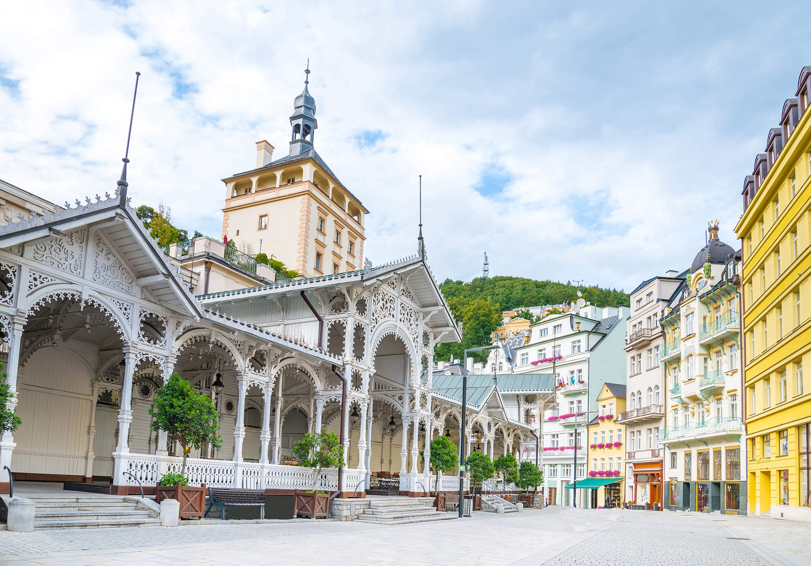
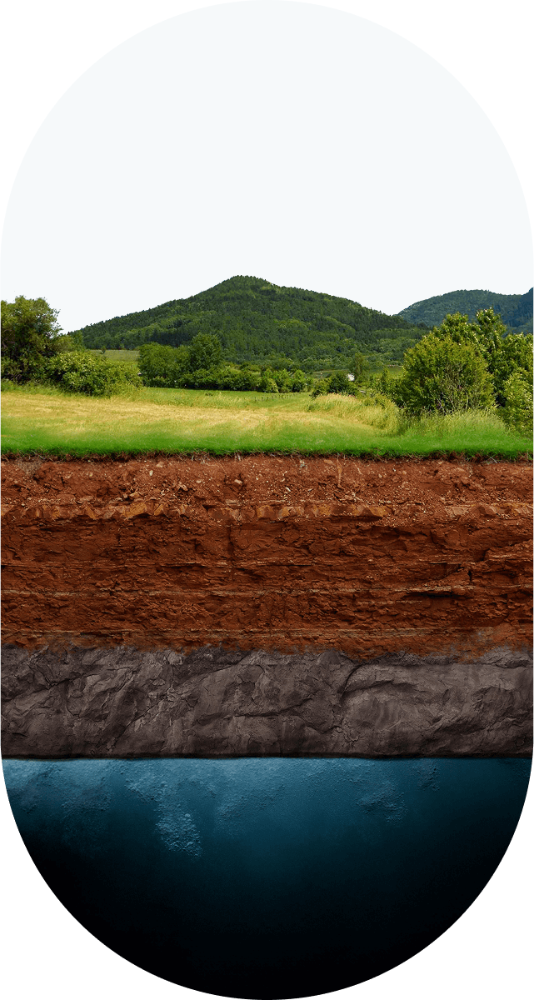

Mattoni pochází z Doubavských hor, oblasti s jedinečnou geologií a čistým prostředím. Zde, hluboko pod zemí, prochází dešťová voda přirozenou filtrací přes vulkanické horniny a obohacuje se o cenné minerály. Tento přírodní proces trvá desítky let a výsledkem je křišťálově čistá přírodní minerální voda, která se stáčí přímo u pramene, aby si zachovala svou původní kvalitu a vyváženou mineralizaci.

Doupovské hory, kde se rodí Mattoni, patří mezi nejzachovalejší přírodní oblasti Česka. Tento sopečný masiv je domovem bohaté fauny a flóry, vzácných rostlin i živočichů. Díky nízké hustotě osídlení si zdejší krajina uchovala svou čistotu, což přispívá k výjimečné kvalitě místních podzemních vod.
Lesy, louky a přírodní rezervace plné života.
Horniny bohaté na minerály přirozeně filtrují vodu.
Žádný průmysl, jen čistá příroda.

Voda zde sestupuje pod zem a mineralizuje se okolními horninami. Jemnou perlivostí ji obohatí mladý oxid uhličitý z Doupovských hor. Poslední příměsí jsou minerály Karlovarského žulového masivu.
Minerální voda známá jako Mattoni pak „dozrává“ v hloubce 125 až 230 metrů.
Příroda Doupovských hor dává minerální vodě Mattoni jedinečné složení minerálů. LaborUnionCZ Františkovy Lázně, červen 2010 (mg/l)
Palmovka Open Park IV, Voctářova 2497/18,
180 00 Praha 8 - Libeň
Recepce: Tel.: +420 257 107 611
Zákaznický servis: objednávky/servis zařízení: Tel.: +420 266 191 444,
E-mail: cz.objednavky@mattoni.cz
Mattoni
Kyselka 44
Kyselka 362 72
50.2626039N, 13.0000100E